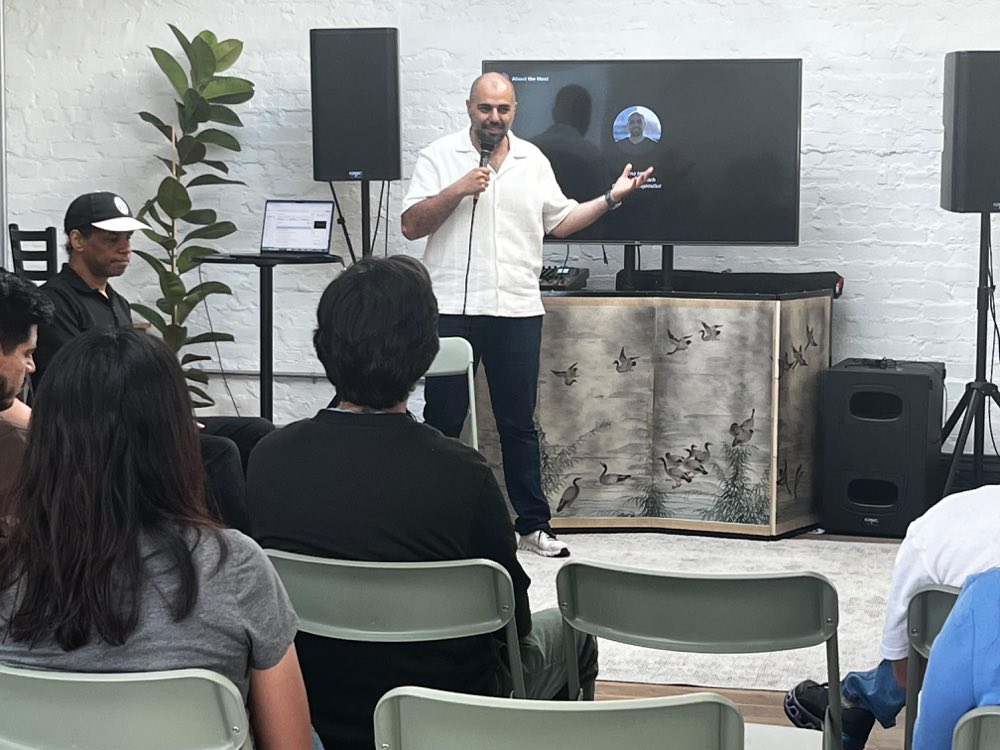

For organizations
AI is not another technology rollout. Agents will act like coworkers — completing tasks, coordinating work, participating in decisions — and that reshapes roles, teams, accountability, and what people consider valuable about their work. We help organizations build the human and organizational capacity for that future: sensemaking, emotional readiness, distributed leadership, hands-on experimentation, and ethical governance.

Why traditional AI adoption falls short
Leadership sets direction, but it can't centrally determine how AI fits every person's work. The people closest to the work understand its context, risks, and judgment calls — they must become active participants in redesigning their roles, not recipients of a plan.
AI changes too quickly for occasional tool training. Teams need to learn continuously, experiment safely, and redesign their own workflows. The goal isn't AI literacy — it's distributed AI leadership.
People start with different roles, motivations, fears, and levels of trust. Adoption has to connect AI to each person's actual work — with agency over how it should, and shouldn't, be used.
Privacy, bias, accountability, authorship, the value of human judgment — these questions must be worked through as teams redesign real work, not in an annual ethics workshop.
How we work
Interviews and listening. What's really happening in the team — spoken and unspoken.
A program shaped to your context — not a slide deck reused from the last client.
Workshops and hands-on sessions. People build with AI on their real work.
Repetition inside real workflows — team norms and rituals until new habits hold.
For deeper technical transformation, we bring implementation partners — we hold the human layer.
What we offer
Helping leaders hold uncertainty, communicate change, and keep trust intact. Half-day and full-day formats.
Hands-on AI adoption sessions grounded in the team's actual workflows. Also available as a multi-week team cohort.
Where are the lines? Readiness assessment and working sessions that turn values into practice.
Ongoing counsel for leaders steering adoption — plus partners for large-scale implementation.